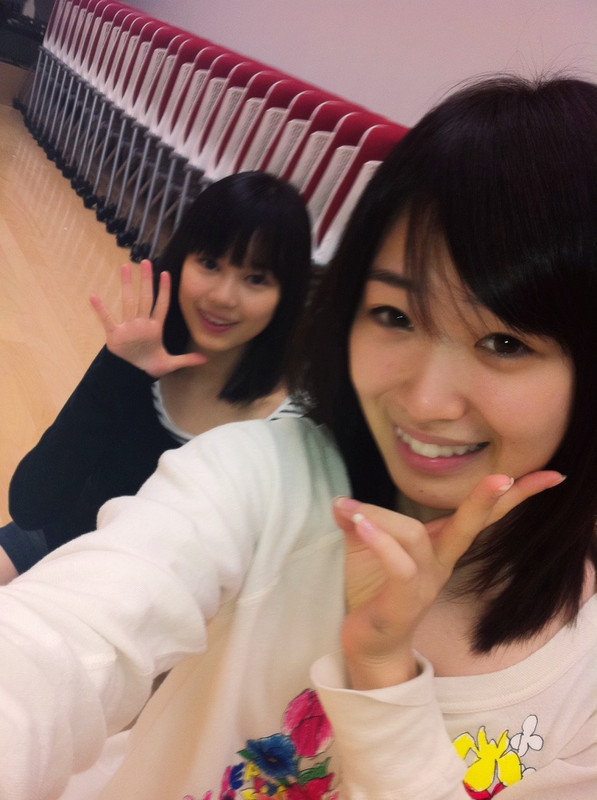

2011/1120Sun（´-`）.｡oO(かずみん♪.°
みなさん(*^o^*)
最近は気温差がはげしいですが
体調は大丈夫でしょうか？
私は元気ですっ( ´ ▽ ` )
鼻うがい、オススメですよ(^-^)/
------------------------------
前回も沢山のコメント
ありがとう\(//∇//)\
リラックス出来る瞬間…
お風呂、寝るときなどなど…
共感できるものがたくさんあって
嬉しかったです(*^_^*)
中には《乃木坂のブログを見てる時》
と書いてくださる方もいらっしゃって..
感動しました！
ありがとうございます:*･'(*ﾟ▽ﾟ*).:*･
全部実践して、たくさんリラックス
したいです♪( ´▽｀)
でも何より！
ファンの皆さんと触れ合ってる時が
一番元気をもらうので、
イベントが待ち遠しいっ\(//∇//)\
コメントにも30日のイベント
応募して下さった方、いましたね(*^^*)
ありがとうございます！
今週は☆
大阪・名古屋でのイベントがあります(^○^)ノ
イベントと握手会などなどやるよ♪.°
正直、人が集まるか心配だなぁ…
でも乃木坂らしく、盛り上げて
頑張るので、皆さんぜひ
きてくださいね(=´∀｀)人(´∀｀=)
---------------------------
今日の乃木坂って、どこ
は演技やりま～す(*^o^*)
恥ずかしい…
あれ流れるかなぁ…
カットされてるかな…
お楽しみヾ(＠⌒ー⌒＠)ノ
それではまたね♭°
最後にいくちゃんとパシャり！

私も声楽を習っていたので
今度一緒にTHINK OF ME
を歌いたいです！笑
かずみ＊.°
2011/11/20 21:31
コメント(151)
お！乃木どこ期待してる( *｀ω´)♪
明日は気温めっちゃ下がるらしいから風邪引かないようにね！！
ちなみに自分も30日応募しましたよ～
最近外れまくってるから当たってほしいなぁ
質問
かずみんはいつも寝る前ってどんな曲聴くの？
ちなみに自分も30日応募しましたよ～
最近外れまくってるから当たってほしいなぁ
質問
かずみんはいつも寝る前ってどんな曲聴くの？
でもやっぱり、
かずみんに録音して貰った
声を聴くのが1番リラックス
できるかな\(//∇//)\
はやくイベントの日
来ないかなあー(>_<)
あんまり肘こすり
すぎないでね(笑
かずみんに録音して貰った
声を聴くのが1番リラックス
できるかな\(//∇//)\
はやくイベントの日
来ないかなあー(>_<)
あんまり肘こすり
すぎないでね(笑
一実さんありがとう！とても嬉しいです♡
もさきちはかずみん推しでよかった♡
みんなの体調気ずかってありがとう！
それよりかずみんの方こそ心配です。
全国キャラバンが始まるから、風邪など引かないでください。
もさきちはかずみんと共にいますよ(恥ずかし〜よくこんな事がいえるな！)
以上です
もさきちでした
もさきちはかずみん推しでよかった♡
みんなの体調気ずかってありがとう！
それよりかずみんの方こそ心配です。
全国キャラバンが始まるから、風邪など引かないでください。
もさきちはかずみんと共にいますよ(恥ずかし〜よくこんな事がいえるな！)
以上です
もさきちでした
30日行きたーい！！！！でも当たるかなぁ(*ノωノ)
今日も一日ご苦労さん
鼻うがいしたら…
穴と言う穴から液体が出てきて大変な事になったぞぉぉぉ
でも…これで風邪引かにかなヾ(･ω･`;)ﾉ
毎日電車移動大変だけど頑張ってね
ではまた更新楽しみ待ってるね
今日も一日ご苦労さん
鼻うがいしたら…
穴と言う穴から液体が出てきて大変な事になったぞぉぉぉ
でも…これで風邪引かにかなヾ(･ω･`;)ﾉ
毎日電車移動大変だけど頑張ってね
ではまた更新楽しみ待ってるね
声楽とか多才やね(^q^)
大阪と名古屋は行けそうにない…
でもその分乃木どこでかずみんの活躍を見るよ(￣∀￣)
そしてZEPPに当たるよう祈るわ(￣∀￣)
大阪と名古屋は行けそうにない…
でもその分乃木どこでかずみんの活躍を見るよ(￣∀￣)
そしてZEPPに当たるよう祈るわ(￣∀￣)
おはこんばんちは。
風邪気味なんで鼻うがい試してみます。
今週のイベント、おそらく行けると思うよ！
楽しみにしてるね。
ではまた。蛇（じゃ）
風邪気味なんで鼻うがい試してみます。
今週のイベント、おそらく行けると思うよ！
楽しみにしてるね。
ではまた。蛇（じゃ）
『乃木坂って､どこ』見たよぉ～
告白シーンかわいかったね
30日のイベントも応募したよ
当選して早くイベント行きたいなぁ～
楽しいイベントになることを期待してます
告白シーンかわいかったね
30日のイベントも応募したよ
当選して早くイベント行きたいなぁ～
楽しいイベントになることを期待してます
大阪のイベント行くぜい＼(^O^)／
俺はかずみんみてるだけで癒されるw
埼玉から大阪のりこむよー！
待っててね♪
かずみんの歌声はやくききたいな(*≧∀≦*)
やっぱブログ見てると疲れとれるわ！
だからもっと更新して！w
かずみん大好き！！！！
コウヘイより(*≧∀≦*)
埼玉から大阪のりこむよー！
待っててね♪
かずみんの歌声はやくききたいな(*≧∀≦*)
やっぱブログ見てると疲れとれるわ！
だからもっと更新して！w
かずみん大好き！！！！
コウヘイより(*≧∀≦*)
おはようございます。僕熊えもん。
昨夜のＯＡ見ました。
かずみんて、告白するとき＆恋が成就したとき、
あんな顔するんだなぁ、って思いました(^^)
その透明度のある笑顔、とっても素敵だと思います。
また見たいです。
なにげに爪が大人の女性ですね。ムヒヒ。
でわ。
昨夜のＯＡ見ました。
かずみんて、告白するとき＆恋が成就したとき、
あんな顔するんだなぁ、って思いました(^^)
その透明度のある笑顔、とっても素敵だと思います。
また見たいです。
なにげに爪が大人の女性ですね。ムヒヒ。
でわ。
私もかずみんから
たくさん元気もらってるよ＼(^o^)／
早く会いたいなっ！
さすがに遠征は出来ないけど(;o;)
先輩の彼女として隣にいさせてください(ｃ)
とかかずみんに言われて断る意味＞＜！
すごい可愛かったよ(*^^*)☆☆
演技見たよ！可愛かった！
俺も別にいいけどとか言いたい←
来月福岡に来てくれるんやね♪
かずみんに会えるかな？
俺も別にいいけどとか言いたい←
来月福岡に来てくれるんやね♪
かずみんに会えるかな？
ｷｬﾗﾊﾞﾝのｲﾍﾞﾝﾄ
握手会とか
あるんだー(°Д°)
行ってみようかな!
握手会とか
あるんだー(°Д°)
行ってみようかな!
おつかれさま
見たよ～
乃木坂ってどこ？
まあじ笑った(>_<)
かずみの
不良役（笑）
千葉県ね！
おっけおっけ
把握（笑）
にしても
あの告白のやつ
あれには
マジでキュンとした
いや
くそかわいかった
あれには
惚れました
うん！！
いくや
かずみんはじめまして
最初はななみん推しだったけど、最近かずみんのなんとも言えないキャラに惹かれてかずみん推しになりました！
美人さんなのにそれを(いい意味で)感じさせない雰囲気、なんか面白い動き、そして何といっても肘こすりw
昨日の乃木どこ(勝手に略しましたw)で、かずみんと生駒ちゃんの番長対決に思わず笑ってしまいましたw
かずみんと生駒ちゃんの絡みを見るのが最近大好きですw
好きすぎて夢の中に二人が出てきたこともあります(ちなみに二人で漫才してて、かずみんがボケで生駒ちゃんがツッコミでしたw)
かずみんから見た生駒ちゃんってどんな子ですか？僕から見たらほんとに仲のいい友達に見えます！
寒い日が続きますが、かずみんも風邪ひかないように頑張ってください！
最初はななみん推しだったけど、最近かずみんのなんとも言えないキャラに惹かれてかずみん推しになりました！
美人さんなのにそれを(いい意味で)感じさせない雰囲気、なんか面白い動き、そして何といっても肘こすりw
昨日の乃木どこ(勝手に略しましたw)で、かずみんと生駒ちゃんの番長対決に思わず笑ってしまいましたw
かずみんと生駒ちゃんの絡みを見るのが最近大好きですw
好きすぎて夢の中に二人が出てきたこともあります(ちなみに二人で漫才してて、かずみんがボケで生駒ちゃんがツッコミでしたw)
かずみんから見た生駒ちゃんってどんな子ですか？僕から見たらほんとに仲のいい友達に見えます！
寒い日が続きますが、かずみんも風邪ひかないように頑張ってください！
かずみん、声楽までやってたのねぇ。
今度是非いくちゃんとのハーモニーを聴かせてね
ところで、見ましたよ！乃木どこ。
告白のシーン。番組内でも絶賛されてたけど、最高でした。めっちゃカワイイファン倍増間違いなしです！！！
いこまちゃんとの対決シーンは笑えたけど．．．でも千葉県人にとっては嬉しい台詞だったけどね
３０日のイベントは応募しましたが、他のイベントは千葉の田舎からの参加は難しいので、当選する事を祈るのみです
今回も無理だろーなぁ．．．
今度是非いくちゃんとのハーモニーを聴かせてね
ところで、見ましたよ！乃木どこ。
告白のシーン。番組内でも絶賛されてたけど、最高でした。めっちゃカワイイファン倍増間違いなしです！！！
いこまちゃんとの対決シーンは笑えたけど．．．でも千葉県人にとっては嬉しい台詞だったけどね
３０日のイベントは応募しましたが、他のイベントは千葉の田舎からの参加は難しいので、当選する事を祈るのみです
今回も無理だろーなぁ．．．
かずみん、おっはー。
kackeyですよ。
11/30のイベント応募しましたよ。
昨夜放送の『乃木坂って どこ？』
乃木坂メンバー達が演技に初挑戦したね。誰がいちばん上手かっただろう？
ココは敢えて内緒にしとこう！(笑)
でも、皆上手かったよ！
いくちゃん（生田絵梨花ちゃん）ダ！
いくちゃん、瞳が綺麗な娘（こ）やね。
kackeyですよ。
11/30のイベント応募しましたよ。
昨夜放送の『乃木坂って どこ？』
乃木坂メンバー達が演技に初挑戦したね。誰がいちばん上手かっただろう？
ココは敢えて内緒にしとこう！(笑)
でも、皆上手かったよ！
いくちゃん（生田絵梨花ちゃん）ダ！
いくちゃん、瞳が綺麗な娘（こ）やね。
声楽習ってたんだ～
イベントとかで披露して欲しい！
乃木坂ってどこ？は録画しといたから後で見るよ！
寒くなってきたら体調気をつけてね！
イベントとかで披露して欲しい！
乃木坂ってどこ？は録画しといたから後で見るよ！
寒くなってきたら体調気をつけてね！
乃木どこ見たよ(・o・)ノ
かずみんの告白のあとの笑顔めちゃかわいかった～！
出身地言い合うところもね笑
ZEPPが楽しみ(｀・ω・´)
かずみんの告白のあとの笑顔めちゃかわいかった～！
出身地言い合うところもね笑
ZEPPが楽しみ(｀・ω・´)
ぶろぐアップ楽しみにしてました♪
昨日の乃木坂ってどこ？
楽しく見させていただきました！
告白のシ―ン
かずみんめちゃかゎぃ
あの笑顔で抱きしめられたいです
ずっとかずみんファンです！
昨日の乃木坂ってどこ？
楽しく見させていただきました！
告白のシ―ン
かずみんめちゃかゎぃ
あの笑顔で抱きしめられたいです
ずっとかずみんファンです！
ちはイベントねえ、日曜日やってくれたら、遠征できるのに平日は、遠征厳しいですね。乃木坂のイベント平日が多いから、厳しいです。だから、blogと週一の(乃木坂どこ)が最近の楽しみですわ。
今日の乃木どこの演技！告白のやつ！
照れてる感じ最高に可愛かった～(*/ω＼*)
今度からかずみんには「別に」って冷たく言ってこう（笑）
照れてる感じ最高に可愛かった～(*/ω＼*)
今度からかずみんには「別に」って冷たく言ってこう（笑）
かずみんハロウ！
昨日の告白のやつは１０回くらい見ちゃったよ！
超可愛すぎた！！！
会ったときの為に「別にいいよ」の発生練習するまであるよね！
最近はほんとかずみんのブログが楽しみでしょうがない！
かずみんも風邪ひかないように気をつけてね！
昨日の告白のやつは１０回くらい見ちゃったよ！
超可愛すぎた！！！
会ったときの為に「別にいいよ」の発生練習するまであるよね！
最近はほんとかずみんのブログが楽しみでしょうがない！
かずみんも風邪ひかないように気をつけてね！
こんきちっ
べ〜です
30日モチロン応募したけど
当たってると良いなぁ
乃木坂って、どこ？
見たで
告白の演技は上手いし可愛くて最高でした
演技もできるなんてやはり山口百恵さんを好きなだけある笑
予告のかずみんめっちゃ可愛かったわ
来週も絶対見るな
べ〜です
30日モチロン応募したけど
当たってると良いなぁ
乃木坂って、どこ？
見たで
告白の演技は上手いし可愛くて最高でした
演技もできるなんてやはり山口百恵さんを好きなだけある笑
予告のかずみんめっちゃ可愛かったわ
来週も絶対見るな
体調管理大切な時期だね。
かずみんも大阪とか名古屋に行ったりで体調崩しやすいから気をつけてね＼(^O^)／
それと30日のイベント申し込んだよ(・∀・)ﾉ
録音会当たったから当たるか心配(´･ω･`)
僕の友達でも大阪のイベント楽しみにしてる人いるからきっとたくさん来ると思います(´∀｀)
ではては、今日も１日がんばっていきまっしょいo(^o^)o
かずみんも大阪とか名古屋に行ったりで体調崩しやすいから気をつけてね＼(^O^)／
それと30日のイベント申し込んだよ(・∀・)ﾉ
録音会当たったから当たるか心配(´･ω･`)
僕の友達でも大阪のイベント楽しみにしてる人いるからきっとたくさん来ると思います(´∀｀)
ではては、今日も１日がんばっていきまっしょいo(^o^)o
メッチャ可愛かったぞ〜！！
∧ ∧
●^∇^●
（このピカチュウ並に！）
次のイベント当たるといいな◎^∇^◎
またね〜(^o^)/
乃木坂って、どこ
の演技なかなか上手かったです！
本音を言うとかずみんの上目遣いが可愛いすぎましたｗｗｗｗｗｗ
の演技なかなか上手かったです！
本音を言うとかずみんの上目遣いが可愛いすぎましたｗｗｗｗｗｗ
お見立て会で拝見したパワーとおもしろさのポテンシャルがテレビだと、薄まってしまうので、昨日の放送繰り返し観ています。たしかに暑い超寒いで体調崩しやすい困った陽気ですので、全国キャラバンで体調気をつけて下さいね！
更新きたあああ！
最近かずみんのブログが楽しみでしょうがない（笑）←ガチw
一日に何回も個人ページチェックしちゃうよ～o(^▽^)o
コメント結構みてるんだね！嬉しいよー(((o(*ﾟ▽ﾟ*)o)))
俺は東京だから30日のイベント応募したよ^^
かずみんに会えるの楽しみ！
....昨日の乃木どこの演技マジ可愛いかった！！！！！
照れてるのとか最高☆*:.｡. o(≧▽≦)o .｡.:*☆
あれ握手会でやってもらおうかな（笑）
多分キュン死するからやめとくかww
体調に気を付けて頑張ってね！
☆☆☆(なお・ω・にゃん)☆☆☆
最近かずみんのブログが楽しみでしょうがない（笑）←ガチw
一日に何回も個人ページチェックしちゃうよ～o(^▽^)o
コメント結構みてるんだね！嬉しいよー(((o(*ﾟ▽ﾟ*)o)))
俺は東京だから30日のイベント応募したよ^^
かずみんに会えるの楽しみ！
....昨日の乃木どこの演技マジ可愛いかった！！！！！
照れてるのとか最高☆*:.｡. o(≧▽≦)o .｡.:*☆
あれ握手会でやってもらおうかな（笑）
多分キュン死するからやめとくかww
体調に気を付けて頑張ってね！
☆☆☆(なお・ω・にゃん)☆☆☆
かずみんおはょ＼(^O^)／
かずみんの写メ見て毎日仕事頑張ってるよ＾ﾛ＾;
また肘こすりしてね
土曜日は千葉から名古屋イベ行くからね
もち30日も申込したよ
(一実o^∀^o46)
↑
これ大事
かずみんの写メ見て毎日仕事頑張ってるよ＾ﾛ＾;
また肘こすりしてね
土曜日は千葉から名古屋イベ行くからね
もち30日も申込したよ
(一実o^∀^o46)
↑
これ大事
今日の、乃木坂って…の演技、楽しみに見ます。
まだ見てないからわからないけど、
かずみんは、歌がうまいので、女優というよりは、歌手を目指した方がいいと思うなぁ…、
でも、これをきっかけに演技が凄く好きになって、女優になっても、応援するからね！
まだ、乃木坂グループでもブレイクしてないのに、期待値大なので、いろんなこと想像で言って、失礼します。
でも、かずみんだったら、ソロの歌手になったとしても、まだ通過点にすぎないと思えるくらい、成功できるんじゃないかなぁ、とりあえずは、バラエティーなどで見てるのが、今は１番楽しい。
いろんなこと、がんばってね。
まだ見てないからわからないけど、
かずみんは、歌がうまいので、女優というよりは、歌手を目指した方がいいと思うなぁ…、
でも、これをきっかけに演技が凄く好きになって、女優になっても、応援するからね！
まだ、乃木坂グループでもブレイクしてないのに、期待値大なので、いろんなこと想像で言って、失礼します。
でも、かずみんだったら、ソロの歌手になったとしても、まだ通過点にすぎないと思えるくらい、成功できるんじゃないかなぁ、とりあえずは、バラエティーなどで見てるのが、今は１番楽しい。
いろんなこと、がんばってね。
ブログ更新ありがとう (^-^)
写真二人とも可愛い ☆
名古屋イベント行くことにしたよ (^-^)v
早く"高山った"に成りたい (>_<)←切実
あとは、
30日当たりますように (^人^)♪
乃木坂って、どこ？ 楽しく見たよ ＼(^o^)／
かずみん、めっちゃ可愛いかった
だいぶ笑ったし 笑
「こたつで寝る→風邪ひく」
これ気をつけて！ 笑
元気なかずみんが一番だからね♪
ふと、この前の変顔を思い出す
ドアップ
ドヤ顔を
アップしてほしい☆
写真二人とも可愛い ☆
名古屋イベント行くことにしたよ (^-^)v
早く"高山った"に成りたい (>_<)←切実
あとは、
30日当たりますように (^人^)♪
乃木坂って、どこ？ 楽しく見たよ ＼(^o^)／
かずみん、めっちゃ可愛いかった
だいぶ笑ったし 笑
「こたつで寝る→風邪ひく」
これ気をつけて！ 笑
元気なかずみんが一番だからね♪
ふと、この前の変顔を思い出す
ドアップ
ドヤ顔を
アップしてほしい☆
連投ごめんなさい。
昨日の乃木坂って、どこ見たよ(´∀｀)
みんな演技上手いな(´Д｀)
いつかソロでドラマに出れるといいね。まだ、CDも出てないのに気が早いかwww
あー、早くイベント行きて＼(^O^)／
そうだ今度のイベントでTHINK OF ME歌ってほしいな(笑)
昨日の乃木坂って、どこ見たよ(´∀｀)
みんな演技上手いな(´Д｀)
いつかソロでドラマに出れるといいね。まだ、CDも出てないのに気が早いかwww
あー、早くイベント行きて＼(^O^)／
そうだ今度のイベントでTHINK OF ME歌ってほしいな(笑)
乃木どこ見ましたよ～
ちゃんとオンエアされてましたｗ
照れてる感じが可愛かったです(*ﾟ∀ﾟ*)
30日のイベント楽しみにしてます！！
ちゃんとオンエアされてましたｗ
照れてる感じが可愛かったです(*ﾟ∀ﾟ*)
30日のイベント楽しみにしてます！！
最近は寒くなったり温かくなったりしていますので
体調管理はしっかりしてくださいね！！ｗ
僕も、メンバーのブログが更新されると
なんだかほっとする自分がいますｗｗ
どんなことしてるんだろーって気になるからですかね？ｗｗ
さぁ今日も一日頑張りましょう！！
たーちゃんより
体調管理はしっかりしてくださいね！！ｗ
僕も、メンバーのブログが更新されると
なんだかほっとする自分がいますｗｗ
どんなことしてるんだろーって気になるからですかね？ｗｗ
さぁ今日も一日頑張りましょう！！
たーちゃんより
こんちは！！
100年に1人の逸材
わっきー☆が来ました！！
俺も、あんな告白されたいわ〜〜〜〜〜
あ、２枚目のかずみん
「宇宙、ｷﾀｰｰｰｯ！！」のポーズじゃんｗｗ
30日のイベント応募したぜ！！
当たったら、逸材旋風を巻き起こすぜ！！
100年に1人の逸材
わっきー☆が来ました！！
俺も、あんな告白されたいわ〜〜〜〜〜
あ、２枚目のかずみん
「宇宙、ｷﾀｰｰｰｯ！！」のポーズじゃんｗｗ
30日のイベント応募したぜ！！
当たったら、逸材旋風を巻き起こすぜ！！
かずみんも風邪ひかないよう
体調には気をつけて頑張って下さい。
札幌のイベントには来るかな？
体調には気をつけて頑張って下さい。
札幌のイベントには来るかな？
かずみん♡こんにちは！もさきちです。
テレビちゃんと映ってましたね。生駒ちゃんとのからみは面白かったよ。
もうすぐ全国キャラバンですね。少しでもファンを増やし、肘こすりを披露してください。もちろんファンの肘もこすってください。もさきちもお見立て会のとき肘こすってもらって嬉しかったですよ。
忙しい日が続くと思いますが、風邪など引かないで元気な姿をファンに見せてください。
また肘こすってください。
かずみんの素朴さが大好きなもさきちより。
テレビちゃんと映ってましたね。生駒ちゃんとのからみは面白かったよ。
もうすぐ全国キャラバンですね。少しでもファンを増やし、肘こすりを披露してください。もちろんファンの肘もこすってください。もさきちもお見立て会のとき肘こすってもらって嬉しかったですよ。
忙しい日が続くと思いますが、風邪など引かないで元気な姿をファンに見せてください。
また肘こすってください。
かずみんの素朴さが大好きなもさきちより。
乃木どこの演技めっちゃよかった〜
かわいすぎた(*´ω｀*)笑
…全国イベきたー！
かずみん福岡にもきてくれるかな？
待っとるよー(笑)
かわいすぎた(*´ω｀*)笑
…全国イベきたー！
かずみん福岡にもきてくれるかな？
待っとるよー(笑)
こんちわ!(^^)!
名古屋、かずみん推しのキクラゲと
箱推しのたしと東京神奈川からいくでー
かずみんにあえるとか
高まってる！
いや
超高山ってるわｗｗｗ
名古屋、かずみん推しのキクラゲと
箱推しのたしと東京神奈川からいくでー
かずみんにあえるとか
高まってる！
いや
超高山ってるわｗｗｗ
気温差激しすぎだ
かずみん風邪きいつけや
かずみん風邪きいつけや
おれも30日が待ち遠し過ぎるよ～|(￣3￣)|はやく会いたい(●^▽^●)/''
演技すばらしかったよ(≧ε≦)
最優秀主演女優賞並です（笑）
演技すばらしかったよ(≧ε≦)
最優秀主演女優賞並です（笑）
一実ちゃんの演技見たよ＾＾
上手っていうかかわいすぎて(*´∀｀)
来週のファッションのやつも楽しみ＾＾
そして大阪はいけないけど名古屋のイベントはいくよー＾＾
もちろん東京も応募したから当たるといいな(b´∀｀)
会える機会が増えてうれしいぜー
ってことで一実ちゃんも風邪には気をつけてねー＾＾
上手っていうかかわいすぎて(*´∀｀)
来週のファッションのやつも楽しみ＾＾
そして大阪はいけないけど名古屋のイベントはいくよー＾＾
もちろん東京も応募したから当たるといいな(b´∀｀)
会える機会が増えてうれしいぜー
ってことで一実ちゃんも風邪には気をつけてねー＾＾
いこまちゃんとの謎な対決、面白かったよ～
このコンビ、なかなかイイよね
このコンビ、なかなかイイよね
演技上手かったよ
(*^^*)
こんにちは！！
今日（11/21）はめっちゃ暖かいですねぇ！半袖１枚でもイケるぜっ！
30日のイベント応募したよ！当たるといいなぁ。。地方イベントも頑張って！乃木坂46はもう結構な人気になってるよ！！
かずみんは声楽もやってたんだね。早く歌声が聴きたいな。
前回のかずみんからの質問だけど、リラックスできるのは、仲良しの友達とお酒を飲む席かなぁ。20歳超えたら分かると思うよ！（笑）
今日（11/21）はめっちゃ暖かいですねぇ！半袖１枚でもイケるぜっ！
30日のイベント応募したよ！当たるといいなぁ。。地方イベントも頑張って！乃木坂46はもう結構な人気になってるよ！！
かずみんは声楽もやってたんだね。早く歌声が聴きたいな。
前回のかずみんからの質問だけど、リラックスできるのは、仲良しの友達とお酒を飲む席かなぁ。20歳超えたら分かると思うよ！（笑）
告白のやつ
あれ、かわいすぎたw
うん。うん。うん。www
あれ、かわいすぎたw
うん。うん。うん。www
鼻うがいってむせない？
俺やると絶対むせるんだけど…(￣□￣；)
３０日のイベント応募したよ！！当選するといいなぁ〜
あと告白する演技マジ上手かった！！！あまりのギャップにビックリしたww
俺やると絶対むせるんだけど…(￣□￣；)
３０日のイベント応募したよ！！当選するといいなぁ〜
あと告白する演技マジ上手かった！！！あまりのギャップにビックリしたww


{kind=link}
{kind=link}
は、鼻うがい(゜Д゜)？